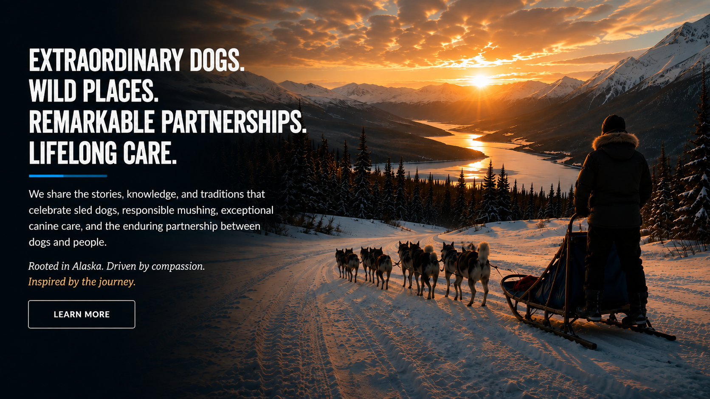

Canine Care
Endurance begins with wellness.
Nutrition, recovery, veterinary care, paw protection, emotional well-being, and lifelong responsibility.
Explore care standards →
Arctic endurance is built through daily care, patient training, sound judgment, and a relationship of trust between dogs and people.
Arctic Paws Collective brings audiences closer to the full story: the dogs, mushers, veterinarians, handlers, families, traditions, and communities behind every mile.
Read our mission →Canine Care
Nutrition, recovery, veterinary care, paw protection, emotional well-being, and lifelong responsibility.
Explore care standards →Meet the Dogs
Learn each dog’s personality, position, strengths, favorite routines, and role within the team.
Meet the team →Featured Team
Focused, steady, and known for reading difficult trail conditions.
Energetic, social, and happiest when the whole team is moving together.
Powerful, calm, and dependable in the demanding position nearest the sled.
Trail Journal
Training milestones, kennel routines, veterinary insights, trail conditions, history, and conversations with the people who care for these remarkable dogs.
Open the Trail JournalWhy emotional readiness matters as much as conditioning.
What appetite, gait, attitude, and hydration can reveal.
How dog teams connected remote communities across Alaska.
Featured Partners
Sponsor profiles, educational collaborations, special offers, and impact reporting all live in one dedicated partner experience.
“The trail is measured in miles. The partnership is built one day at a time.”
Help Carry the Story Forward